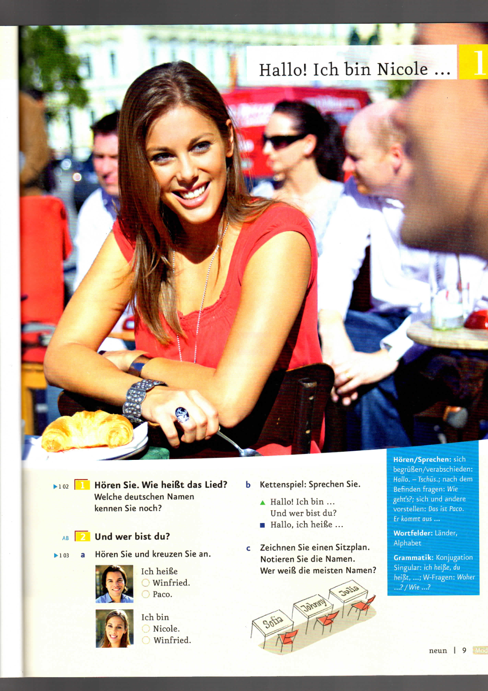

1
Hören Sie. Wie heißt das Lied?
Welche deutschen Namen kennen Sie noch?
اسمع. اسم الأغنية إيه؟ تعرف أسامي ألماني تانية إيه؟
♫
OriginalaufnahmeCD 1 · Track 02 · Aufgabe 1
Sich begrüßen. Sich kennenlernen.
Welche deutschen Namen kennen Sie noch?
اسمع. اسم الأغنية إيه؟ تعرف أسامي ألماني تانية إيه؟
a Hören Sie und kreuzen Sie an.
وإنت مين؟ اسمع واختار الاسم الصح.
Paco: Hallo! Ich heiße Paco. Und wer bist du?
أهلًا! أنا اسمي باكو. وإنت مين؟
Nicole: Ich heiße Nicole.
أنا اسمي نيكول.
Auszug aus der Originalaufnahme. Zusätzliche Wort-Aussprache folgt nach der Stimmauswahl.Aufgabe 2a ist interaktiv. Die weiteren Aufgaben stehen im Originalbuch. Wort-Aussprache und weitere Übungen sind noch in Arbeit.
دي أول نسخة تجريبية. تمرين 2a شغال تفاعلي. باقي التمارين موجودة في عرض الكتاب الأصلي. نطق الكلمات وباقي التمارين لسه تحت الشغل.

Originalscan. Handschriftliche Beispiele gehören zum Bild.